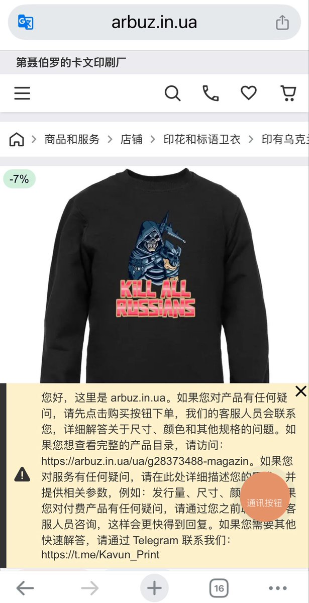
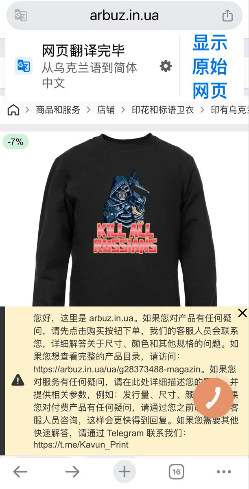
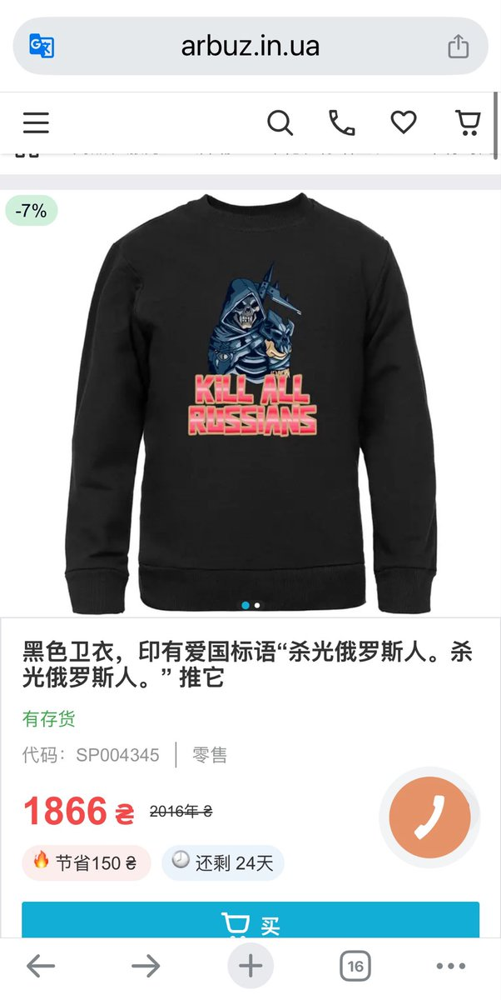
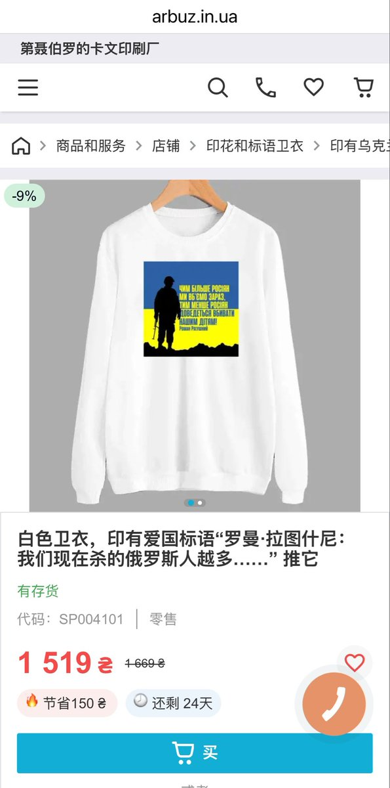

𝐀𝐬𝐡𝐥𝐞𝐲 𝐁𝐥𝐨𝐜𝐤🍥🌹🇹🇼🏳️⚧️🇪🇺
@bolckAshley
@CPUP2024 然後你就對中國人這般的行為視而不見認為那是「樸素的民族感情」了，評價為玩sm玩的😁




赛高の葱娘酱miku🇨🇳☭☪︎☫——皇俄顽固分子 品客学术权威
@CPUP2024
“哼，我们文明的乌克兰人可不是你们坏中国人，就知道说要杀光敌国人。”
是的啊，你说得又多又对，可是乌克兰第聂伯罗州的卡文服装厂对你提出了不同观点。😅
乌克兰人已经喊了十多年的杀光俄罗斯人，你就接着洗呗。 https://t.co/UkC4tFZlLY https://t.co/Sq6boKybEU